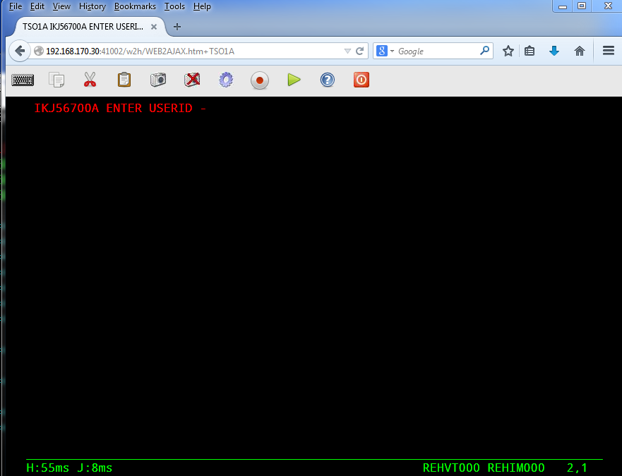
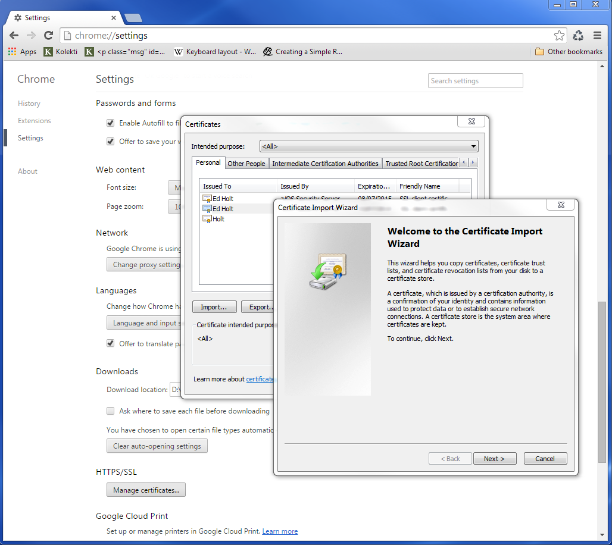
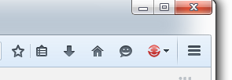
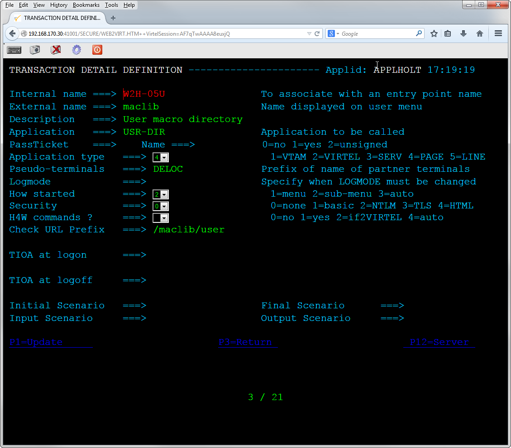
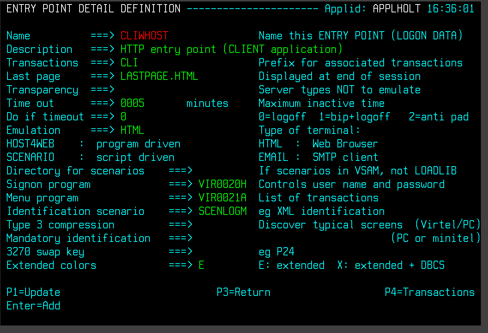
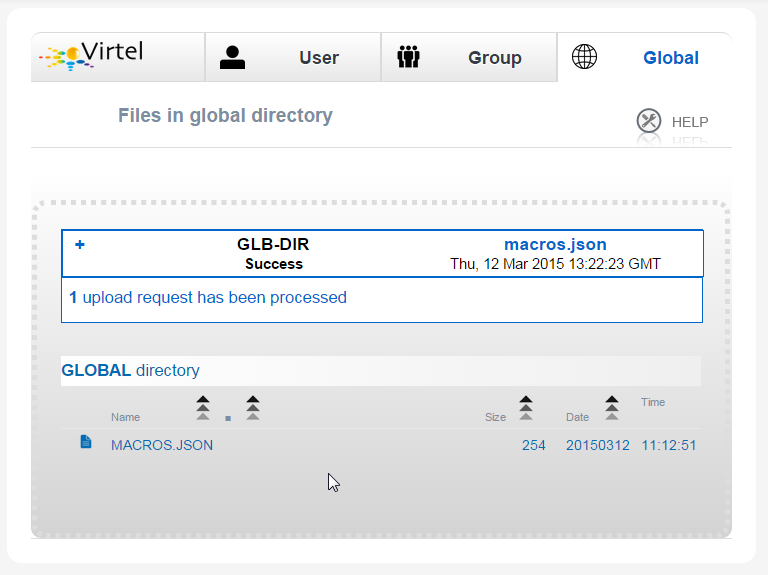
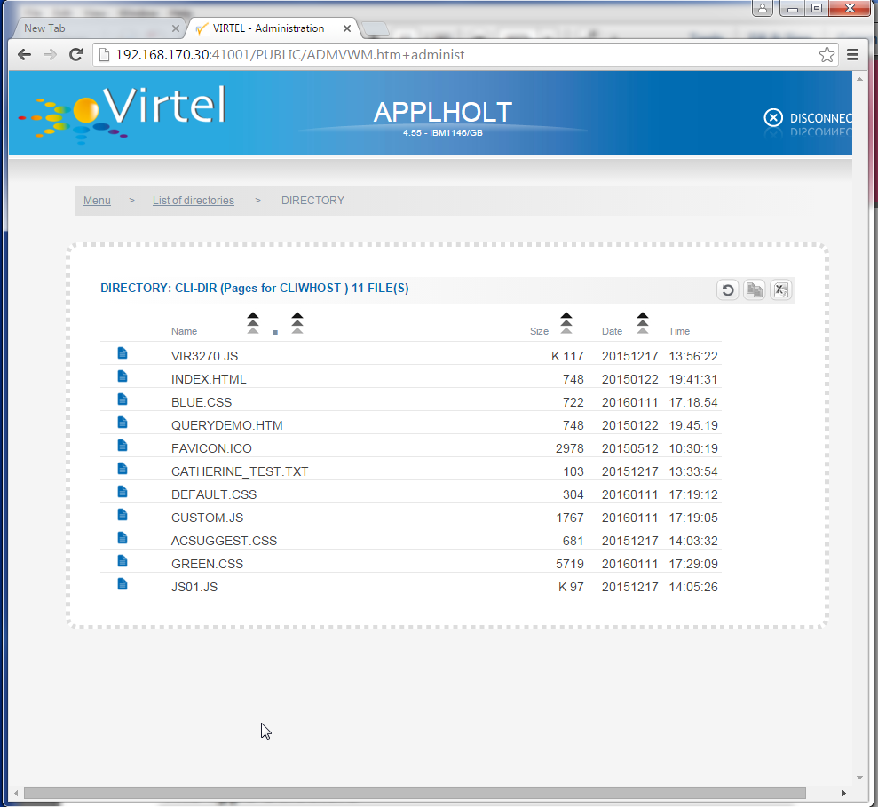

How To - Virtel Nailing¶
How to activate VIRTEL LU nailing¶
VIRTEL Version 4.53
Roger Bowler, Syspertec Communication, 2010
Ed Holt, Syspertec Communication, 2016
1 Introduction¶
1.1 Description
This document describes procedures for assigning fixed LU names to specific users in VIRTEL Web Access. This is known as LU nailing.
Before you attempt the procedures described in this document, you should first install VIRTEL and get basic access to your 3270 application working using the sample definitions provided with the product. Do not attempt to define LU nailing with cookies until you have got the basic VIRTEL Web Access functions working and demonstrated to your satisfaction.
1.2 What is VIRTEL Web Access?
VIRTEL Web Access is a software product which enables users to access mainframe 3270 applications from a standard web browser, without intermediate servers, without Java, and without installing any additional software on the workstation.
1.3 What is LU nailing?
When a user connects to a 3270 application through VIRTEL Web Access, VIRTEL makes it appear to the application as if the user is connecting from a virtual 3270 terminal. In VTAM terms a virtual 3270 terminal is called a Logical Unit or LU, and each LU has a unique eight character name (LU name). VIRTEL has at its disposal a pool of LUs known to VTAM, whose names are specified in the VIRTEL configuration file (the VIRARBO file). Normally when a user connects to a 3270 application, VIRTEL chooses any available LU from the pool.
While most mainframe applications will accept a connection from any LU name, certain applications (particularly applications which run under IMS) are sensitive to the LU name because they assign permissions to the user based upon the LU name of the user’s terminal. LU nailing allows VIRTEL to assign a particular LU name to a user based upon the user’s IP address or upon a cookie presented by the user’s browser.
1.4 What are the different types of LU nailing?
This document describes the following types of LU nailing:
LU nailing by IP address
LU nailing by cookie delivered by e-mail
LU nailing by cookie obtained by self-registration
LU nailing by URL
2 How to activate LU nailing by IP address¶
2.1 Description
This chapter describes the procedure for setting up a VIRTEL configuration which will map specific IP addresses to predefined LU names. This kind of mapping is suitable where users connect from fixed IP addresses. The mapping is done by VIRTEL “rules”, and does not require cookies.
The procedure is described by way of two examples. The first example shows how to map individual IP addresses to specified LU names. The second example shows how to map a range of IP addresses to a pool of LU names.
2.2 Mapping individual IP addresses to LU names
In this example we will choose three IP addresses and map each one to a specific LU name, as shown in the table below:
IP address |
LU name |
|---|---|
192.168.0.39 |
RHTVT001 |
192.168.0.147 |
RHTVT002 |
192.168.0.45 |
RHTVT003 |
To configure this mapping we will add three rules to the W-HTTP line. This is the line defined as port 41001 in the VIRTEL sample configuration.
First logon to VIRTEL via (tn)3270 and press F1=Admin, or select “Admin” from the VIRTEL Web Access menu. Then select F1=Lines. Put the cursor on W-HTTP and press F12 to see the LINE DETAIL DEFINITION panel, then F5 to see the rules associated with the line:

Figure 2.1 List of rules for W-HTTP line
Place the cursor on WHT00200 and press F12 to add a new rule. We will add one new rule for each IP-LU mapping. Here is what you need to enter to create the first rule:

Figure 2.2 Rule to map IP address 192.168.0.39 to LU RHTVT001
You must choose a unique name for the rule. Here we have chosen WHT00110, to fit in with the names delivered in the sample configuration. Rules are processed in alphanumeric order of name, so it is important that the name you choose should precede the name of the default rule, which is delivered as WHT00200. For a production configuration you could choose any naming scheme.
In the “IP Subnet” field, place a “1” in the column on the left (this activates the testing of the IP address for this rule), and then type the IP address “192.168.000.039” into the field as shown. The “Mask” field must contain “255.255.255.255” which means that the entire IP address is tested.
For documentation purposes, you should also include the IP address in the “Description” field.
In the “Parameter” field, type the name of the LU to be nailed to this IP address.
Note: the LU name must be defined in a VIRTEL pool, see “Adding LUs to the pool” on page 11.
The “Entry Point” field should contain WEB2HOST, which is the normal entry point associated with the W-HTTP line on port 41001.
Now press ENTER to add the rule, then F4 to activate it.
Next repeat the process to add the second rule:

Figure 2.3 Rule to map IP address 192.168.0.147 to LU RHTVT002
Press ENTER to add the rule and F4 to activate it.
Then the same for the third rule:

Figure 2.4 Rule to map IP address 192.168.0.45 to LU RHTVT003
Again press ENTER to add the rule and F4 to activate it.
Finally press F3 to go back to the list of rules for the W-HTTP line, which should now look like this:

Figure 2.5 Updated list of rules for W-HTTP line
Now, for example, when you connect to a host application via VIRTEL port 41001 from a browser at address 192.168.0.147, you will get LU name RHTVT002.
2.3 Mapping a range of IP addresses to a pool of LU names
The second example shows how to map a range of IP addresses to a pool of LU names. We will add an additional rule which will ensure that all connections in the network 192.168.100.0 through 192.168.100.255 will be assigned the next unused LU name in the range RHTVT1xx, as shown in the table below:
IP address |
LU name |
|---|---|
192.168.100.nnn |
RHTVT1xx |
To set up this mapping we will add another rule, using the same procedure as described in the previous section. The rule is shown below:

Figure 2.6 Rule to map IP address 192.168.100.nnn to LU pool RHTVT1xx
The new rule is named WHT00140, the “IP Subnet” field specifies the IP address 192.168.100.000, and the “Mask” is set to 255.255.255.000 to indicate that only the first three octets of the IP address are tested to determine whether the rule matches the IP address of the client browser. The “parameter” field specifies a generic LU name RHTVT1* which signifies that any LU whose name begins with RHTVT1 may be assigned to clients whose IP address matches this rule.
Note: the LU names must be defined in a VIRTEL pool, see “Adding LUs to the pool” on page 11.
Press ENTER to add the rule, then F4 to activate it.
2.4 The default rule
You will notice that there is a default “catch-all” rule WHT00200 (other users) which will be taken for any IP address which is not matched by one of the earlier rules. If you do not want unmatched IP addresses to be able to access the system, change this rule so that it specifies a non-existent LU name in the “parameter” field. This will cause VIRTEL to issue an error message and close the connection. Optionally, you could change this rule so that it goes to an entry point which displays a panel with an appropriate message such as “Access not authorized”.
3 How to activate LU nailing with cookies delivered by e-mail¶
3.1 Description
This chapter describes the procedure for setting up LU nailing with cookies delivered by e-mail. The procedure consists of defining a user, associating an LU name with the user, and sending the user an e-mail containing a browser cookie. When the user’s browser subsequently connects to a mainframe application such as IMS or CICS via VIRTEL Web Access, VIRTEL recognizes the security code contained in the cookie and assigns the designated LU name to the user during communication with the application.
3.2 Setting up the SMTP line
In VIRTEL terms, a user identified by cookie is known as a “correspondent”. The cookie is initially delivered to the correspondent by e-mail, so before you can activate a correspondent, you have to make sure that you have your VIRTEL SMTP line correctly configured. See section “1.2.4 Examples of line definitions” subsection “Definition of an SMTP line” on page 24 of the VIRTEL Connectivity Reference manual.
You can add an SMTP line to the VIRTEL configuration by running the ARBOLOAD job in the VIRTEL CNTL library. If you did not already do so at VIRTEL installation time, specify SMTP=YES in the options at the start of the job, and rerun ARBOLOAD which will add an SMTP line named S-SMTP to the VIRTEL configuration file. Now stop and restart the VIRTEL STC.
Next, logon to VIRTEL via (tn)3270 and choose F1=Admin then F1=Lines. Put the cursor on line S-SMTP and press F12. In “remote ident” you need to put the IP address and port number of your SMTP server (this will normally be the same SMTP server as you have configured in your desktop e-mail client). Leave “local ident” unchanged, we do not use it since VIRTEL will not be receiving any incoming e-mails for this application. Fill in the “description” field as defined in the VIRTEL Connectivity Reference manual.
Press F1 to save the updated line definition. Then stop and start the
SMTP line using these MVS commands:
F VIRTEL,LINE=S-SMTP,P
F VIRTEL,LINE=S-SMTP,S
3.3 Setting up the rules for LU nailing with cookies
A set of “rules” attached to the VIRTEL HTTP line determines how VIRTEL processes incoming requests. To see the rules attached to an HTTP line, go to the VIRTEL Configuration Menu and press F1=Lines, then put the cursor on the name of the line and press F5=Rules. The list of rules attached to the W-HTTP line (port 41001) is shown below:

Figure 3.1 Rules for line W-HTTP
Normally all requests are processed by a default “catch-all” rule. For the W-HTTP line the default rule is named WHT00200. This default rule assigns an entry point (in this case WEB2HOST) and selects the next available LU from the terminal pool *W2HPOOL. When LU nailing with cookies is in effect, a different rule WHT00100 is selected for users who present a cookie containing a valid security code. This rule also assigns entry point WEB2HOST, but the LU name is obtained from the user’s correspondent record.
The rule for LU nailing is shown below:

Figure 3.2 Rule for LU nailing by cookie
The rule for LU nailing has the special value $COOKIE$ in the “Parameter” field. This value has a two-fold meaning: firstly, it ensures that the rule is matched only for users who present a cookie containing a valid security code, and secondly, it indicates to VIRTEL that the LU name is taken from “VTAM name” field in the user’s correspondent record.
Users who do not present a cookie, or whose cookie contains an invalid or expired security code, will not match this rule and will drop through to the next rule, which in this example is the “catch-all” rule WHT00200.
3.4 Defining a user
Now you can define your first user. From the VIRTEL Configuration Menu, press F5=Correspondents. At the “List of correspondents” panel, press F12 then fill in these fields:

Figure 3.3 Correspondent detail screen - e-mail correspondent
Replace john.user@whatever.com by the user’s e-mail address.
Replace 192.168.5.30 by the host IP address where VIRTEL is running
Replace RHTVT003 by the LU name to be assigned to this user
Note: the LU name must be defined in a VIRTEL pool, see “Adding LUs to the pool” on page 11.
Leave the “Rule Set” and “Directory” fields blank
Now press Enter. You should get the message “CREATION OK”
See section “1.1.6 Correspondent management” in the *VIRTEL Web Access Guide* for a detailed description of how to define a correspondent.
3.5 Delivering the cookie via e-mail
Next we will send the cookie to the user.
In the “CORRESPONDENT DETAIL DEFINITION” panel, press F4=Activate. The message “ACTIVATION WAS REQUESTED” indicates that VIRTEL has sent the cookie to the user via the SMTP server.
If this is the first time you have tried sending an e-mail from VIRTEL, then it is quite possible that it will fail if the configuration is not yet correct. If the e-mail does not arrive at the user’s workstation, then enter the following MVS command:
F VIRTEL,TRACE,L=S-SMTP
then press F4=Activate again to generate a trace of VIRTEL’s dialog with the SMTP server. The dialog is traced in the SYSPRINT dataset of the VIRTEL started task (use SDSF to see it). From this you should be able to see what the problem is. Common problems are:
codepage problem (the e-mail address in the MAIL TO command should contain an @ sign. If it does not, then check that the COUNTRY parameter in the VIRTCT matches your host codepage)
the SMTP server does not accept VIRTEL’s HELO or MAIL FROM command, check that the userid and hostname specified in the “description” field of the S-SMTP line are values which are acceptable to your mailserver. You may need to liaise with the company’s e-mail administrator to agree on appropriate values.
3.6 Installing the cookie on the browser
When the e-mail arrives at the user’s workstation, it will contain a hyperlink to a VIRTEL page. The user clicks on this hyperlink to install the cookie in his browser.
One point to note here: the desktop administrator may have set the security settings to inhibit the browser from storing cookies on the user’s workstation. Often the simplest solution to this problem is make sure that the browser recognizes VIRTEL’s IP address as being in the “Local Intranet” zone, and not the “Internet” zone. You can verify the zone by looking at the icon in the bottom right hand corner of the Internet Explorer screen when the VIRTEL web page is displayed. If it says “Internet” then you need to click “Tools - Internet Options - Security - Local Intranet - Sites – Advanced” and add VIRTEL’s IP address to the list.
3.7 Using the cookie
Having installed the cookie on the workstation, now whenever this user calls up a VIRTEL web page, VIRTEL will recognize that the cookie matches the one previously sent to john.user, and so it will assign the LU name RHTVT003 when connecting to a host application.
4 How to activate VIRTEL LU nailing with cookies obtained by self-registration¶
This chapter describes the procedure for setting up LU nailing with cookies, where the users initially obtain the cookie by a procedure known as “self-registration”. This is similar to LU nailing described in the previous section, except that the cookie is delivered to the user by a web-page instead of by e-mail. The first time a user accesses VIRTEL, the user is directed to a special self-registration page which assigns an LU name, creates a record in the correspondent file, and delivers a cookie to the user’s browser. When the user subsequently connects to a mainframe application such as IMS or CICS via VIRTEL Web Access, VIRTEL recognizes the security code contained in the cookie and assigns the designated LU name to the user for communication with the application.
4.1 Setting up the rules for self-registration
This section will be completed in a subsequent edition of the documentation.
5 Adding LUs to the pool¶
5.1 Displaying the terminal pool
All LUs which participate in LU nailing must be defined to VIRTEL in a terminal pool. To view the terminal pools, logon to VIRTEL via (tn)3270 and press F1=Admin, or select “Admin” from the VIRTEL Web Access menu. Then select F2=Terminals. You will see a panel similar to the one shown in the figure below:

Figure 5.1 List of terminals
In the above display we can see that there are 80 terminals in the pool named *W2HPOOL, and their internal names are W2HTP000 to W2HTP079. The corresponding LU names are RHTVT000 to RHTVT079, and these are the LU names available for LU nailing when the system is initially installed.
In the following sections we shall see how to add LU names to the pool.
5.2 Adding a terminal to the pool
In this section we will add a new LU named NYCTERM to the terminal pool used for Web Access. Position the cursor on W2HTP000 and press F12 to display the TERMINAL DEFINITION DETAIL screen, and fill in the fields as shown below:

Figure 5.2 Adding a terminal to the pool
The terminal name is an internal name used only within VIRTEL. Any name may be chosen so long as it does not duplicate any other terminal name or any LU name.
The relay name is the LU name. This LU must also be defined in the VIRTAPPL node in USER.VTAMLST.
The pool name must be specified as *W2HPOOL to associate the terminal with Web Access.
Set the repeat count to 1 as we are defining only one terminal.
Now press Enter to add the terminal definition, and press F3 to return to the list of terminals.
5.3 Adding a range of terminals to the pool
In this section we will add a range of LU names SJC001 to SJC010 to the terminal pool for Web Access. Press F12 in the LIST of TERMINALS screen and fill in the fields as shown below:

Figure 5.3 Adding a range of terminals to the pool
The terminal name is the internal name of the first terminal in the range. The name should contain sufficient trailing numeric characters to accommodate the number of terminals in the range, without duplicating any other terminal name or LU name.
The relay name is the LU name of the first terminal in the range. This name must also contain sufficient trailing numeric characters. All the LUs in the range must be defined in the VIRTAPPL node in USER.VTAMLST.
The pool name must be specified as *W2HPOOL.
Set the repeat count to 10 to define ten terminals SJC001 to SJC010.
5.4 Displaying the updated terminal pool
Press Enter to add the terminal definition, then press F3 to return to the list of terminals, which should now look like this:

Figure 5.4 Updated list of terminals
6 LU nailing by cookie obtained by self-registration.¶
6.1 Description
In this section we explain how to set up self-registration. Self-registration is a process whereby a user can connect to Virtel and self-register their details. Upon self-registration Virtel will deliver a clickable link which will deliver the security code to the user’s browser via a cookie. Users or “correspondents” as they are called, who use this process are defined as local or changing users. A local correspondent will have a fixed security code, whereas a changing correspondent will have a new security code each time they connect.
6.2 Setup
For Virtel Self Registration to work a certain amount of customization is required. In the example that follows we will demonstrate setting up a self-registration process by using the VIRCONF ARBO configuration tool.
In our example, a new line will be created to support “self-registration” users. A new directory will be created to support the web elements. The relevant ARBO configuration statements and WEB artifacts will be installed in their respective repositories.
The following diagram gives an overview of the Virtel schematic to support self-registration.
{kind=link}
Figure 6.0 - Overview of Self Registration
6.2.1 The Line definition
*
LINE ID=X-HTTP,
NAME=HTTP-EXC,
LOCADDR=192.168.170.33:41003,
DESC='HTTP line (EXC WEB application)'
TERMINAL=XL,
TYPE=TCP1,
INOUT=1,
PROTOCOL=VIRHTTP,
TIMEOUT=0000,
ACTION=0,
WINSZ=0000,
PKTSZ=0000,
RETRY=0010
This line definition will accept calls on port 41003. Its associated terminal definitions are prefixed with the characters XL. The internal name for the line is X-HTTP and the external name HTTP-EXEC.
6.2.2 The terminal definitions
*
TERMINAL ID=XLPC0000,
RELAY=HOLTWIN7,
POOL=*XLCPOOL,
DESC='PC definition for Ed Holt',
TYPE=3,
COMPRESS=2,
INOUT=3,
STATS=26,
REPEAT=0001
*
TERMINAL ID=XLLOC000,
DESC='Terminals with no relay',
TYPE=3,
COMPRESS=2,
INOUT=3,
STATS=26,
REPEAT=0010
*
TERMINAL ID=XLPOOL0,
RELAY=*XLCPOOL,
DESC='Pool for relay (users with cookie)',
TYPE=3,
COMPRESS=2,
INOUT=3,
STATS=26,
REPEAT=0016
Three different types of terminal statements are required. First, a terminal relay pool is defined by the XLPOOL0 statement. It represents 16 relay terminals in a pool. Any user terminal statement supporting an external user, i.e. a PC, must refer to this pool. The XLLOC000 statement defines a local terminal range of 16 terminals. These not relay related definitions and as such do not refer to the pool. They are used to support Virtel internal work tasks. The XLPC0000 statement represents a user’s dedicated PC connection and refers to the XLPOOL0 pool where it will obtain a relay LU when this user connects. For each PC there must be a separate terminal statement which defines the LU name to be used. In this case the LU name that would be used is HOLTWIN7.
The administration sub application “Correspondent” is the tool that manages the physical PC representation to a logical LU name. In following screen shot we can see how self-registration of a user collocates with a predefined LU name.

Figure 6.2 Correspondent Detail Definition
As you can see, the ID is the physical PC name submitted by the user during the Self-Registration process and the VTAM name is the LU name that will be associated with this PC. The “Correspondent” sub-application is where users and LU names defined. For “self-registration” the id type is “2”. An entry will be made into the “Correspondent” HTML VSAM file every time a user goes through the self-registration process. Self-registration users are controlled through rules attached to the line. The rules attached to the X-HTTP line are as follows.
6.2.3 The Rule definitions
RULE ID=R0000100,
LINE=X-HTTP,
STATUS=ACTIVE,
DESC='Local HTTP access (users authorised by cookie)',
ENTRY=EXCWHOST,
PARAM=$COOKIE$,
IPADDR=(EQUAL,192.168.000.000),
NETMASK=255.255.000.000
*
RULE ID=R0000200,
LINE=X-HTTP,
STATUS=ACTIVE,
DESC='Self-registration (local users without cookie)',
ENTRY=INITVTAM,
IPADDR=(EQUAL,192.168.000.000),
NETMASK=255.255.000.000
*
RULE ID=R0000300,
LINE=X-HTTP,
STATUS=ACTIVE,
DESC='HTTP access (IP address not valid)',
ENTRY=EPREJECT
For line X-HHTP, serving port 41003, only IP address beginning 192.168.*.* will be allowed to self-register. Any other IP address using this port will be passed to an ENTRY POINT called EPREJECT where a reject message will be served and displayed on the users screen.
The first time a user calls in on 41003 there will be no cookie passed. Rule R0000200 will pick up this call and call entry point INITVTAM. This will initiate the self-registration process. For users already self-registered the call in will conatin a cookie in the HTTP request. This will be trapped by rule R0000100 and passed to entry point EXCWHOST.
6.2.4 The Entry Points
- ::
ENTRY ID=EPREJECT, DESC=’Entry point for unauthorized HTTP users’, TRANSACT=REJ, TIMEOUT=0720, ACTION=0, EMUL=HTML, SIGNON=VIR0020H, MENU=VIR0021A, EXTCOLOR=X ENTRY ID=EXCWHOST, DESC=’EXC WEB entry point (users with cookie)’, TRANSACT=EXCW, TIMEOUT=0720, ACTION=0, EMUL=HTML, SIGNON=VIR0020H, MENU=VIR0021A, EXTCOLOR=X ENTRY ID=INITVTAM, DESC=’Self-registration for line X-HTTP’, TRANSACT=INITV, TIMEOUT=0025, ACTION=0, EMUL=HTML, SIGNON=VIR0020V, MENU=VIR0021B, EXTCOLOR=X
These three entry points perform the logic the “self-registration’ process through there associated transactions. Each entry point is associated with a group of transactions identified by the TRANSACT= keyword. Depending on the entry point selected by the rule will determine what default transaction will get called. The name of the transaction will always equal the name of the entry point.
6.2.5 The Transactions
Transactions are associated with entry points by a common prefix identified in the Entry point through the TRANSACT= keyword.
The transactions for EPREJECT are:-
*
TRANSACT ID=REJ-00,
NAME=EPREJECT,
DESC="Default directory = entry point name",
APPL=W2H-DIR,
TYPE=4,
TERMINAL=XLLOC,
STARTUP=2,
SECURITY=0
This is the default transaction for entry point EPREJECT. If called it will search for a page called EPREJECT.HTM in the W2H-DIR directory and server it to the user.
The transactions for INITVTAM are:-
TRANSACT ID=INITV-00,
NAME=INITVTAM,
(EN) DESC='Directory for LU NAILING',
APPL=EXC-DIR,
TYPE=4,
TERMINAL=XLLOC,
STARTUP=2,
SECURITY=0
*
TRANSACT ID=INITV-03,
NAME='w2h',
(EN) DESC='W2H toolkit directory (/w2h)',
APPL=W2H-DIR,
TYPE=4,
TERMINAL=XLLOC,
STARTUP=2,
SECURITY=0
*
TRANSACT ID=INITV-10,
NAME=NAIL,
DESC='Auto-create correspondent record',
APPL=VIR0041V,
TYPE=2,
TERMINAL=XLLOC,
STARTUP=2,
SECURITY=2
INIT-00, the default page for entry point INITVTAM, will serve the HTML page INITVTAM.HTM from the EXEC-DIR directory.
INIT-03 provides a routing to the Virtel W2H-DIR directory.
INITV-10 is a transaction called within the INITVTAM.HTM page. It is associated with the web elements CONFIRMANDGO.HTM and CONFIRMANDWAIT.HTM. These two pages are URL links in INITVTAM.HTM and can be found in the EXC-DIR directory. During self-registration a user will click one of two options to complete the self-registration process from the INITVTAM.HTM page.
The transactions for EXCWHOST are:-
TRANSACT ID=EXCW-00,
NAME=EXCWHOST,
DESC='HTML page directory (default access)',
APPL=EXC-DIR,
TYPE=4,
TERMINAL=XLLOC,
STARTUP=2,
SECURITY=0
*
TRANSACT ID=EXCW-20,
NAME='w2h',
DESC='W2H toolkit directory (/w2h)',
APPL=W2H-DIR,
TYPE=4,
TERMINAL=XLLOC,
STARTUP=2,
SECURITY=0
*
TRANSACT ID=EXCW-41,
NAME=IMS,
DESC='IMS access with cookie',
APPL=IMS3270,
TYPE=1,
TERMINAL=XLVTC,
STARTUP=1,
SECURITY=0
*
TRANSACT ID=EXCW-42,
NAME=TSO,
DESC='TSO access with cookie',
APPL=TSO,
TYPE=1,
TERMINAL=XLVTC,
STARTUP=1,
SECURITY=0
The default transaction, EXCW-00, will serve page EXCWHOST.htm from the EXC-DIR directory. EXCW-01 is a routing transaction that provides a link to the web elements in W2H-DIR and EXCW-41 and EXCW-42 are VTAM application definitions that are available to self-registration users. These transaction are accessed via hard coded links in the EXCWHOST.HTM page but equally could be part of an APPLIST menu display.
6.2.6 The Sub Directory and related web pages
Self-Registration requires a group of web elements:-
*
CommandandGo.htm
CommandandWait.htm
CustomFunctions.js
EXCWHOST.htm
INITVTAM.htm
These elements are uploaded into the EXC-DIR sub directory. Within the ARBO configuration the sub-directory is defined as:-
*
SUBDIR ID=EXC-DIR,
DESC='Pages for EXCWHOST',
DDNAME=HTMLTRSF,
KEY=EXC-KEY,
NAMELEN=0064,
AUTHUP=X,
AUTHDOWN=X,
AUTHDEL=X
To be able to upload web elements to this sub-direction requires the services of an internal Virtel upload transaction. This is defined in the W2H-DIR as:-
*
TRANSACT ID=W2H-83,
NAME='uplexc',
DESC='Upload HTML pages (EXC-DIR directory)',
APPL=VIR0041C,
TYPE=2,
TERMINAL=DELOC,
STARTUP=2,
SECURITY=1,
LOGMSG=EXC-DIR
6.3 The Correspondent Sub Application
Access to the Correspondent Sub Application is as follows. From the VIRTEL Configuration Menu, press F5=Correspondents.

Figure 6.3 Selecting the Correspondent Sub Application
A list of self-registered correspondents will appear. In our list there is one user who is recognized by the ID of HOLT-WIN7. This just so happens to be the PC Name belonging to user. Through the sub-application we can associate this user with a relay LUNAME HOLTWIN7.

Figure 6.4 Listing of Correspondent
6.3.1 The Self-Registration Process
The first phase of the self-registration process is that a user will access the designated port without a security cookie and be routed to the VTAMINIT Entry Point. This will drive the registration process by serving the INITVTAM.HTM page to the user. The user will be presented with the following screen:-
{kind=link}
Figure 6.5. Self-Registration page from VTAMINIT Page 1
Two options are provide on this page. Option one is to complete the self-registration proceed to the application menu page or option2 is to complete the self-registration process and wait to be given the URL to connect to the system. This URL can then be used to connect multiple browsers.
Selecting either option invokes the Virtel transaction INITV-10 (NAIL) which uses Security=2. This level of security uses the NTLM handshake protocol to extract additional workstation information. This information is presented in the second page of the self-registration process and can be changed by the user.
Once any option has been selected then the second page of the registration will be present. In this page you provide the LUNAME that you have been allocated (external process) and you collocated correspondent name, by default the work station name.

Figure 6.6. Self-Registration page from VTAMINIT Page 2
By confirming the details of the VTAM luname and correspondent (ID) the browser will send the information back to Virtel. Virtel will then record the information in the Correspondent data base and then launch the EXCWHOST transaction which will display a menu page of applications than the user can access.

Figure 6.7. Self-Registration application menu page
In the example for HOLT-WIN7 the entry in the database would look like the following:-

Figure 6.8 Correspondent Entry
It is clear that the LUNAME of HOLT-WIN is invalid so this must be corrected in the Edit panel. Pressing PF12 will take us into the Edit panel of the correspondent application where the LUNAME can be amended to the correct name allocated for HOLT-WIN. In this example the name is changed to HOLTWIN7.

Figure 6.9 Updating the Correspondent Entry with the correct LUNAME
Once the LUNAME has been updated the user identified as HOLT-WIN7/ can access applications via the EXCWHOST application list. A VTAM definition must exist to support this user. The VTAM definition will look like this:-
HOLTWIN7 APPL AUTH=(ACQ,PASS),MODETAB=ISTINCLM,DLOGMOD=SNX32702,EAS=1
To support this VTAM LUNAME a Virtel Terminal definition must also exit in the ARBO configuration. The definitional must use a predefined pool. For HOLT-WIN7/ see the terminal definition XLPC0000.

Figure 6.10 Terminal list with the correct Relay(LUNAME) name
6.3.2 The Correspondent Application Options
From within the Correspondent Application self-registered users can be managed. The following option are available:-
PF=1 Update an Entry
Enter Add an Entry
PF=4 Activate a disabled entry
PF=5 Deactivate an Active Entry
PF=6 Add a rule using the IP details.
Using these functions provides a means of administering correspondents. The following is an example of disabling a user:-

Figure 6.11 Disabling a Correspondent using PF5
If the user attempts to access the system Virtel will not permit access as the cookie will no longer be valid and the ID will block any further attempts to re-register.
6.3.3 Customization
The sample web elements can be customized. For example, by default, the Correspondent name field is an HTML input field. This allows the user to specify any id. For additional security it is recommended that this field be changed to a displayable field only thereby preventing the user from self-registering against a known LU name. The sample templates CONFIRMANDGO.HTM and CONFIRMANDWAIT.HTM should be amended and the <INPUT> tag removed for this field.
An Virtel APPLIST transaction may be used instead of the static EXCWHOST page.
Virtel scenarios may be used to check and validate the incoming call and introduce different behavior depending on the IP address and variables contained with the cookie.